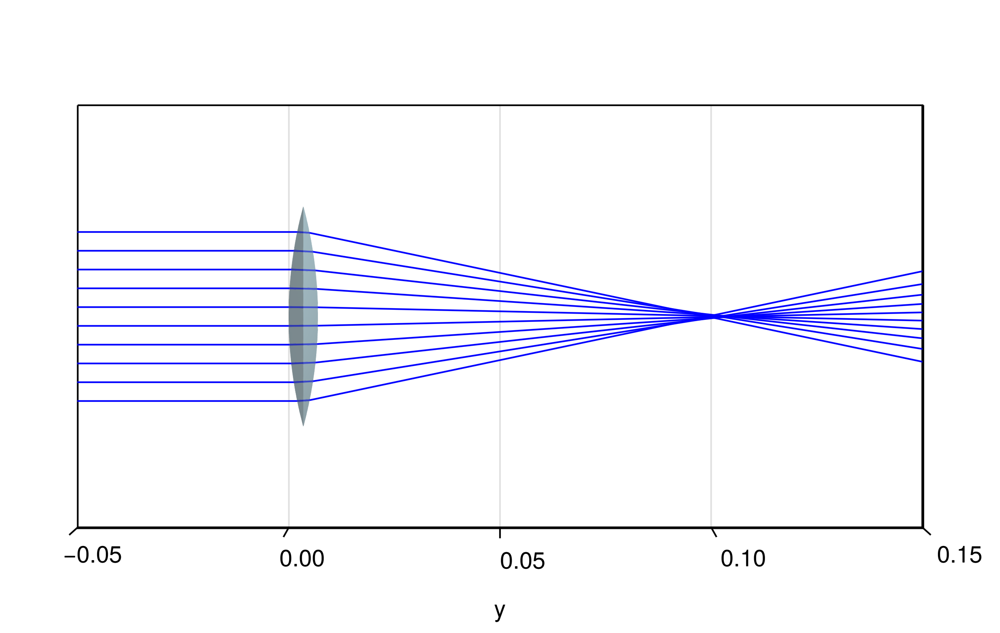

Double Gauss lens
This showcase is taken from the pencilofrays.com website and will demonstrate how to simulate an advanced lens assembly. Firstly, we will define the spherical lenses based on the data given in the mentioned reference.
using CairoMakie, BeamletOptics
# define spherical lenses
l1 = SphericalLens(48.88e-3, 182.96e-3, 8.89e-3, 52.3e-3, λ -> 1.62286)
l23 = SphericalDoubletLens(36.92e-3, Inf, 23.06e-3, 15.11e-3, 2.31e-3, 45.11e-3, λ -> 1.58565, λ -> 1.67764)
l45 = SphericalDoubletLens(-23.91e-3, Inf, -36.92e-3, 1.92e-3, 7.77e-3, 40.01e-3, λ -> 1.57046, λ -> 1.64128)
l6 = SphericalLens(1063.24e-3, -48.88e-3, 6.73e-3, 45.11e-3, λ -> 1.62286)
# Calculate translation distances
l_23 = BeamletOptics.thickness(l1) + 0.38e-3
l_45 = l_23 + BeamletOptics.thickness(l23) + 9.14e-3 + 13.36e-3
l_6 = l_45 + BeamletOptics.thickness(l45) + 0.38e-3
# move elements into position
translate3d!(l23, [0, l_23, 0])
translate3d!(l45, [0, l_45, 0])
translate3d!(l6, [0, l_6, 0])
system = StaticSystem([l1, l23, l45, l6])Defining a StaticSystem will allow the compiler to generate more efficient code to solve this simulation. Note that the refractive indices above are given as anonymous functions. This is because no lens material is specified. Rather, these indices are unique to $\lambda = 486.0~\text{nm}$.
In the next step, we will define a Figure and Axis3 environment in which the ray-tracing results will be visualized.
# generate render
fig = Figure(size=(600,380))
ax = Axis3(fig[1,1]; aspect=:data, azimuth=0, elevation=1e-3)
# hide decorations for vis. purposes
hidexdecorations!(ax)
hidezdecorations!(ax)
render!(ax, system)For interactive viewing it is recommended that a LScene is used instead of the Axis3 with the GLMakie backend. At this point the system can be solved. A Beam consisting of Rays with the wavelength mentioned above will be used for tracing.
λ = 486.0 # nm
zs = LinRange(-0.02, 0.02, 10)
for (i, z) in enumerate(zs)
beam = Beam(Ray([0, -0.05, z], [0, 1, 0], λ))
solve_system!(system, beam)
render!(ax, beam, flen=0.1)
end
Thin lens comparison
The back focal length of the Double Gauss lens above is $f_{\text{bfl}} = 59.21~\text{mm}$ with an overall effective focal length of $f = 100~\text{mm}$. As a comparison, a thin lens with an analogous focal length will be traced. For simplicity it is assumed that $n(\lambda = 486~\text{nm}) = 1.5$.
thin_lens = SphericalLens(100e-3, 100e-3, 0, 52.3e-3, λ -> 1.5)
tl_system = StaticSystem([thin_lens])
fig = Figure(size=(600,380))
aspect = (1,2,1)
limits = (-0.05, 0.05, -0.05, 0.15, -0.05, 0.05)
ax = Axis3(fig[1,1]; aspect, limits, azimuth=0, elevation=1e-3)
# hide decorations for vis. purposes
hidexdecorations!(ax)
hidezdecorations!(ax)
render!(ax, tl_system)
λ = 486.0 # nm
zs = LinRange(-0.02, 0.02, 10)
for (i, z) in enumerate(zs)
beam = Beam(Ray([0, -0.05, z], [0, 1, 0], λ))
solve_system!(tl_system, beam)
render!(ax, beam, flen=0.2)
end